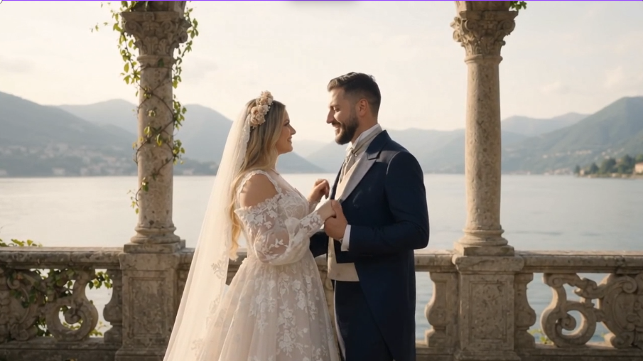
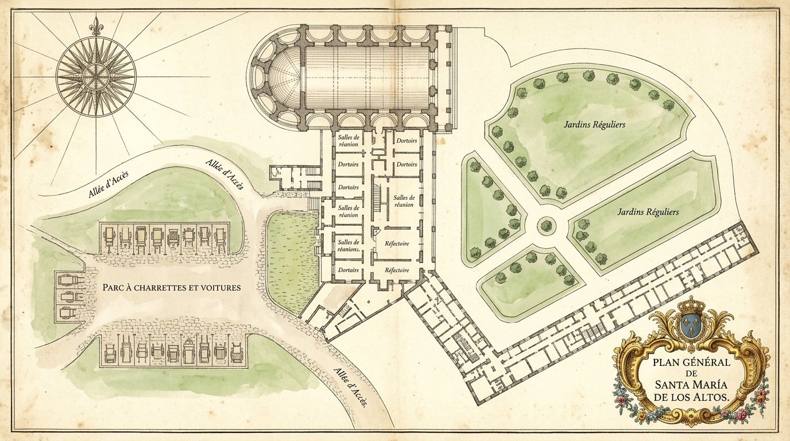

Por la Gracia del Amor Verdadero
Gustavo & Kamilah
Tienen el honor de invitarle a su Enlace Nupcial
Nuestra Historia de Amor
Gustavo & Kamilah
Hay encuentros que parecen haber sido escritos en los astros siglos antes de pronunciar la primera palabra. El viaje de Gustavo & Kamilah comenzó como una tarde serena bajo los laureles, donde una mirada bastó para comprender que la vida, a partir de ese instante, se escribiría al unísono.
Desde las risas compartidas en cada sendero hasta las promesas susurradas al atardecer frente al horizonte, cada instante nos ha guiado a este salón dorado. No celebramos solo un enlace, sino el testimonio eterno de dos almas que eligieron ser refugio, inspiración y cómplices para toda la vida.
"Amar no es mirarse el uno al otro; es mirar juntos en la misma dirección hacia la eternidad."

Los Detalles del Enlace
Viernes, XXX de Abril del año MMXXVII
Fecha & Hora
Ceremonia Solemne a las 11:00 AM.
Se ruega puntualidad de corte.
La Sede Nupcial
Un enclave rodeado de serena naturaleza y amplios jardines.
Santa María de Los Altos, Miranda.
Código de Etiqueta
Damas: Vestido largo de gala en tonos joya, salvia o champaña.
Caballeros: Esmoquin clásico o traje de etiqueta con corbata de lazo.

Itinerario de la Jornada
Cada momento orquestado para ser inolvidable
La Solemne Ceremonia
El intercambio de votos bajo el arco floral en los jardines, acompañados por el tema de Bridgerton y cuarteto de cuerdas.
El Cóctel en los Jardines
Brindis con champaña y coctelería de autor, selección de canapés gourmet y melodías de época al aire libre.
El Banquete Real
Entrada triunfal al Gran Salón bajo la luz de las arañas de cristal. Banquete de alta cocina y discursos de honor.
El Primer Vals & Gran Baile
Apertura de la pista con el vals nupcial de Gustavo & Kamilah, barra libre de coctelería, música festiva y celebración sin fin.
Tornaboda & Brindis de Cierre
Cierre de una velada dorada con bocadillos selectos, música y emotivo brindis de despedida.
Confirmación de Asistencia
Rogamos confirmar antes del 1 de Abril de 2027
Notas para Nuestros Invitados
Todo lo necesario para su estancia y comodidad
Alojamiento & Estancia
Deseamos que este fin de semana sea una reunión cálida en comunidad. Hemos seleccionado opciones de hospedaje cercanas y en la misma finca para disfrutar juntos de esta gran fiesta.
Tarifa especial mencionando #BodaGustavoyKamilahTransporte & Estacionamiento
La Casa de Retiro Santa María de Los Altos cuenta con área de estacionamiento vigilado para todos los invitados. Recomendamos llegar con anticipación para disfrutar del recibimiento imperial.
Recepción vehicular desde las 15:15 hrsMesa de Regalos Oficial
Vuestra compañía es el mayor tesoro que anhelamos. Si deseáis hacernos un obsequio, hemos creado nuestra Mesa de Regalos Virtual para que podáis elegir o reservar vuestra muestra de cariño:
Si deseáis brindarnos un obsequio en efectivo, dispondremos de un cofre nupcial durante la recepción.
Compartamos la Magia
Capturad los instantes de la velada y etiquetad vuestras memorias para que formen parte de nuestro álbum eterno.
Libro de Honor & Deseos
"El corazón no tiene épocas, pero cuando ama con devoción, convierte cualquier instante en un palacio eterno."
SANTA MARÍA DE LOS ALTOS · MMXXVII